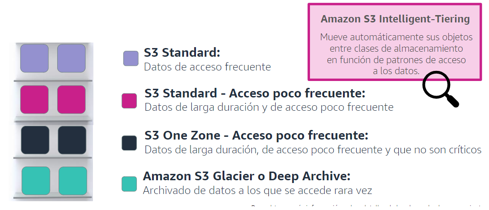
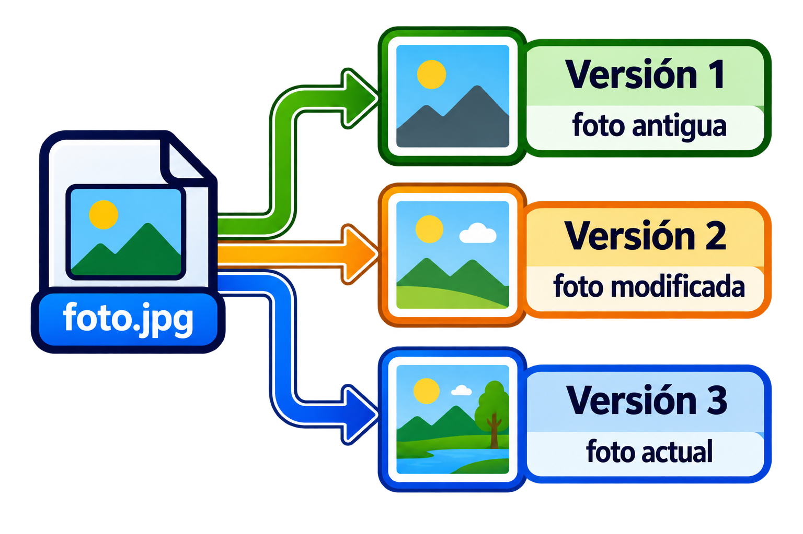
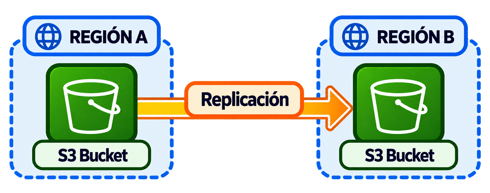

Amazon Simple Storage Service (S3) o Buckets.¶
¿Qué son los Buckets S3?¶
- Servico de
almacenamiento de objetos accesible a través de una URL.
EFS vs S3

- También pueden ser accedidos desde código, por ejemplo desde nuestras aplicaciones.
Características de S3.¶
Nombre único: El nombre del S3 debe ser único en todo AWS.Datos ilimitados: Puede almacenar cantidades de datos ilimitadas.Límite por objeto: Un mismo objeto no puede pesar más de 5TB.Alta Disponibilidad: Por defecto los S3 se replican automáticamente en diferentes zonas de la misma región.Velocidad: Son más lentos que los EBS (almacenamiento en bloque).Cifrado: Los objetos almacenados están cifrados.-
Coste: Se paga por el tráfico de descarga desde el cubo y por el almacenamiento en si.
Características de los objetos alnmacenados.¶
Todos los objetos guardados cuentan con:
-
Clave: Identificador con el cual puedes acceder al objeto almacenado. -
Versión: Podemos almacenar diferentes versiones del mismo objeto, por ejemplo de un documento. -
Valor: El contenido del objeto. -
Metadatos: Pueden ser creados por los usuarios o por el propio sistema de AWS para la gestión del objeto.
Almacenamiento por objetos.
Casos de uso.¶
-
Aplicaciones: Para el almacenamiento de ciertos recursos de aplicaciones como: archivos multimedia de los usuarios o registros del servicio.
-
Webs Estáticas: Pueden alojar webs estáticas.
-
Copias de seguridad: Permite un almacenaje barato y accesible para almacenar y restaurar copias de seguridad.
Tipos de S3:¶
-
S3 Estándar: Ofrece mayor rendimiento, se usa para acceso habitual de datos. Usado por aplicaciones web, servicios de contenido (vídeos), videojuegos, etc.
-
S3 Estándar - Acceso poco frecuente: Sigue siendo un acceso rápido, pero a los que se accede con menos frecuencia, pero que requieren acceso rápido cuando es necesario, por ejemplo una copia de seguridad reciente.
-
S3 One Zone – Acceso poco frecuente: Acceso también de alto rendimiento pero sin réplicas, usado en copias de seguridad secundarias.
-
S3 Glacier: Es un almacenamiento lento de bajo coste. Se usa para los datos que es más raros acceder.
S3 Intelligent-Tiering.

Política de Ciclo de Vida.¶
- Dicta la vida útil de un archivo dependiendo del uso que se haga de él, por ejemplo pasando a uso poco frecuente y seguidamente a Glacier y finalmente para su eliminación, reduciendo costes de forma automática.

Versioning.¶
-
Es una característica
opcionalde cada bucket S3. -
Permite que se generen diferentes objetos de otro al ser modificados. Esto nos permitirá volver a
restauraruna versión anterior de un archivo. -
Activar el versionado es gratis, pero cada versión es un nuevo objeto que se crea dentro del S3 y por tanto el almacenamiento crece y con ello su
coste.
No hay que confundir activar el versionado con tener un backup.

Replicación.¶
-
Se puede automatizar la réplica entre dos buckets.
-
Existen dos tipos de réplicas:
💥
Same-Region Replication (SRR).💥
Cross-Region Replication (CRR).

Seguridad.¶
Políticas.¶
Son estructuras JSON que indican:
-
Principal: ¿Quién?💥 *: Todo el mundo.
💥 IAM: Usuarios de AWS.
💥 Roles: Grupos de AWS.
-
Action: ¿Qué puede hacer?💥 s3:GetObject: Descargar objetos.
💥 s3:PutObject: Cargar objetos.
💥 s3:DeleteObject: Eliminar objetos.
💥 ...
-
Resource: ¿Sobre qué objetos?💥 ARN: Es el identificador único del bucket/objeto.
-
Effect: ¿Se permite o se deniega dicha acción?💥 Allow.
💥 Deny.
-
Condition: ¿Bajo qué condiciones?💥 IP: Desde ciertas direcciones IPs.
💥 Tiempo: A ciertas horas.
💥 Protocolos: Mediante ciertos protoclos (HTTPS).
💥 ...
Por defecto las políticas rechazan cualquier acción.
Ejemplo de que cualquier persona, puede descargar cualquier objeto del S3 llamado salva-web.¶
{
"Version": "2012-10-17",
"Statement": [
{
"Effect": "Allow",
"Principal": "*",
"Action": "s3:GetObject",
"Resource": "arn:aws:s3:::salva-web/*"
}
]
}
ACL (Listas de Acceso).¶
AWS aconseja el uso de políticas frente a la configuración de ACLs.
-
Son formas de seguridad genéricas que permiten aplicar reglas básicas, son anteriores al perfil IAM de AWS.
-
ACL no permite filtrar por:
💥 Condiciones.
💥 Usuarios IAM.
💥 No puede apliar acciones tan detalladas como las políticas.